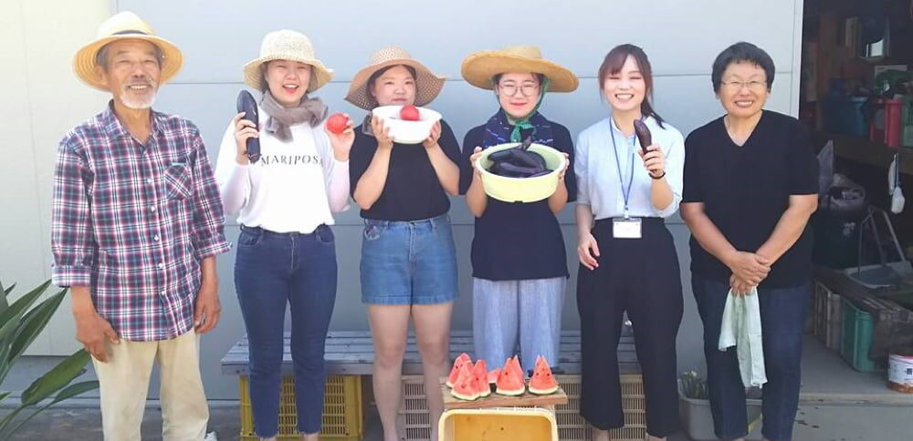
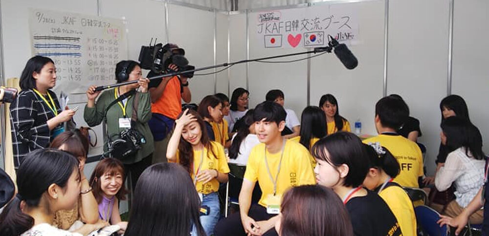
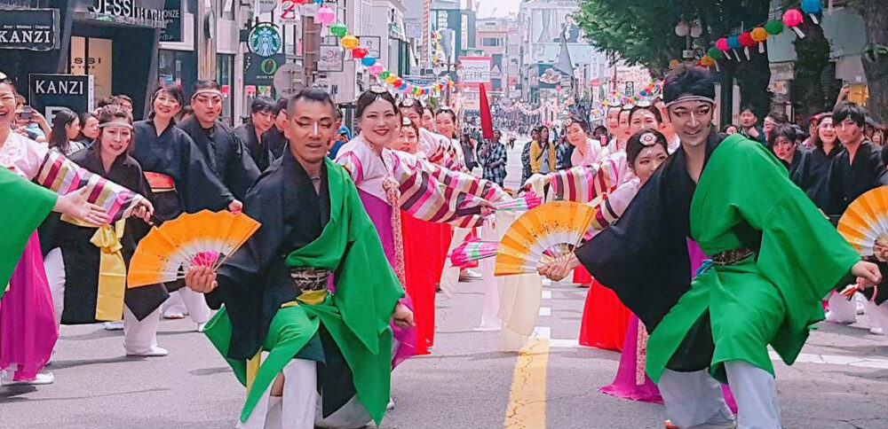
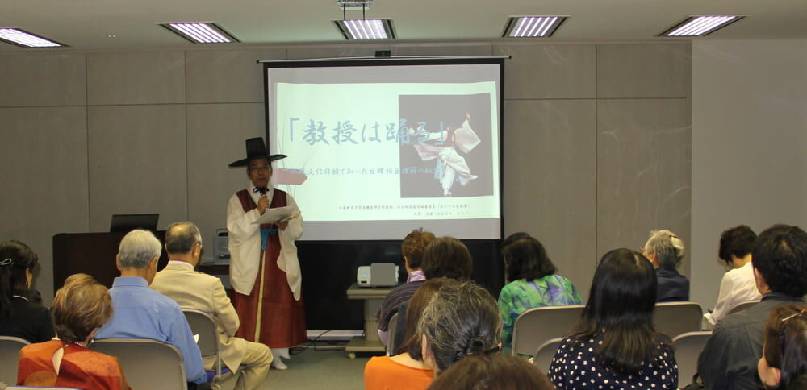
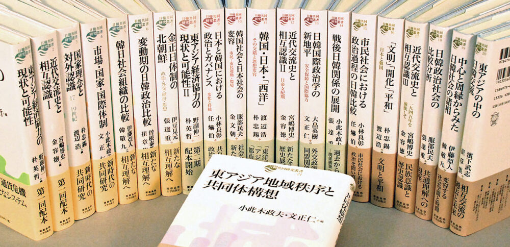

01
青少年交流
次世代を担う日韓の青少年を対象に、相手国の社会や文化にふれる機会をつくります。
詳しく見るOUR ACTIVITIES
PROGRAMS

01
次世代を担う日韓の青少年を対象に、相手国の社会や文化にふれる機会をつくります。
詳しく見る
02
日韓の研究者や有識者の調査・研究活動を支援し、知的交流の基盤を広げます。
詳しく見る
03
市民レベルの交流事業や学術・文化交流事業を支援し、日韓交流の広がりを後押しします。
詳しく見る04
両国の専門家が対話する場を設け、日韓関係と文化交流に関する議論を深めます。
詳しく見る
05
日韓関係や文化をテーマに、多様な分野の専門家による講演会を開催しています。
詳しく見る
06
共同研究や交流事業の成果を刊行物としてまとめ、日韓相互理解の資料として発信します。
詳しく見る
07
日韓文化交流に貢献した個人・団体の活動を顕彰し、交流の輪を広げます。
詳しく見る